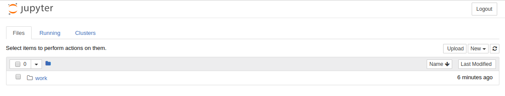
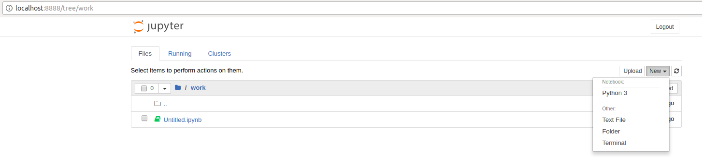

We use a Docker image from Docker Hub: (https://hub.docker.com/r/sequenceiq/spark/) This repository contains a Docker file to build a Docker image with Apache Spark and Hadoop Yarn.
bash
$ docker pull sequenceiq/spark:1.6.0
In this step, we will launch a Spark container.
bash
$ docker run -it -p 8088:8088 -p 8042:8042 -h sandbox sequenceiq/spark:1.6.0 bash
bash
$ docker run -d -h sandbox sequenceiq/spark:1.6.0 -d
After a container is launched, we can run Spark in the following two modes: (1) yarn-client and (2) yarn-cluster. The differences between the two modes can be found here: https://spark.apache.org/docs/latest/running-on-yarn.html
bash
$ spark-shell --master yarn-client --driver-memory 1g --executor-memory 1g --executor-cores 1
bash
$ spark-submit --class org.apache.spark.examples.SparkPi --master yarn-client --driver-memory 1g --executor-memory 1g --executor-cores 1 $SPARK_HOME/lib/spark-examples-1.6.0-hadoop2.6.0.jar
Let us observe Spark task execution by adjusting the parameter of SparkPi and the Pi result from the following two commands.
bash
$ spark-submit --class org.apache.spark.examples.SparkPi \
--master yarn-client --driver-memory 1g \
--executor-memory 1g \
--executor-cores 1 $SPARK_HOME/lib/spark-examples-1.6.0-hadoop2.6.0.jar 10
$ spark-submit --class org.apache.spark.examples.SparkPi \
--master yarn-client --driver-memory 1g \
--executor-memory 1g \
--executor-cores 1 $SPARK_HOME/lib/spark-examples-1.6.0-hadoop2.6.0.jar 10000
Let us write our own word-count with Spark RDD. After the shell has been started, copy and paste the following code in console line by line.
bash
$ spark-shell --master yarn-client --driver-memory 1g --executor-memory 1g --executor-cores 1
scala
val textFile = sc.textFile("file:///etc/hosts")
val words = textFile.flatMap(line => line.split("\\s+"))
val counts = words.map(word => (word, 1)).reduceByKey(_ + _)
counts.values.sum()
bash
$ pyspark --master yarn-client --driver-memory 1g --executor-memory 1g --executor-cores 1
python
textFile = sc.textFile("file:///etc/hosts")
words = textFile.flatMap(lambda line:line.split())
counts = words.map(lambda word:(word, 1)).reduceByKey(lambda x,y: x+y)
counts.map(lambda x:x[1]).sum()
First we need to pull the image from the Docker Hub :
bash
$ docker pull sequenceiq/spark-native-yarn
It will take sometime to download the image. Now we have to run docker spark image interactively.
bash
$ docker run -i -t -h sandbox sequenceiq/spark-native-yarn /etc/bootstrap.sh -bash
This will take you to the interactive mode.
Let's run a sample KMeans example. This is already built with Spark.
Here we specify the data data set from a local folder inside the image and we run the sample class KMeans in the sample package. The sample data set used is inside the sample-data folder. Spark has it's own format for machine learning datasets. Here the kmeans_data.txt file contains the KMeans dataset.
bash
$ ./bin/spark-submit --class sample.KMeans \
--master execution-context:org.apache.spark.tez.TezJobExecutionContext
\
--conf update-classpath=true \
./lib/spark-native-yarn-samples-1.0.jar /sample-data/kmeans_data.txt
If you run this successfully, you can get an output as shown here.
Finished iteration (delta = 0.0)
Final centers:
DenseVector(0.15000000000000002, 0.15000000000000002, 0.15000000000000002)
DenseVector(9.2, 9.2, 9.2)
DenseVector(0.0, 0.0, 0.0)
DenseVector(9.05, 9.05, 9.05)
Run the following command to do a sample join operation on a given dataset. Here we use two datasets, namely join1.txt and join2.txt. Then we perform the join operation that we discussed in the theory section.
bash
$ ./bin/spark-submit --class sample.Join --master execution-context:org.apache.spark.tez.TezJobExecutionContext --conf update-classpath=true ./lib/spark-native-yarn-samples-1.0.jar /sample-data/join1.txt /sample-data/join2.txt
In this example the wordcount.txt will used to do the word count using multiple reducers. Number 1 at the end of the command determines the number of reducers. As spark can run multiple reducers, we can specify the number as a parameter to the programme.
bash
$ ./bin/spark-submit --class sample.WordCount --master execution-context:org.apache.spark.tez.TezJobExecutionContext --conf update-classpath=true ./lib/spark-native-yarn-samples-1.0.jar /sample-data/wordcount.txt 1
Here we need a new image to work on. Let's run the following command. This will pull the necessary repositories from docker hub, as we do not have most of the dependencies related to it. This can take a few minutes to download everything.
bash
$ docker run -it-p 8888:8888 -v $PWD:/cloudmesh/spark --name spark jupyter/pyspark-notebook
Here you will get the following output in the terminal.
``` docker run -it -p 8888:8888 -v $PWD:/cloudmesh/spark --name spark jupyter/pyspark-notebook Unable to find image 'jupyter/pyspark-notebook:latest' locally latest: Pulling from jupyter/pyspark-notebook a48c500ed24e: Pull complete 1e1de00ff7e1: Pull complete 0330ca45a200: Pull complete 471db38bcfbf: Pull complete 0b4aba487617: Pull complete d44ea0cd796c: Pull complete 5ac827d588be: Pull complete d8d7747a335e: Pull complete 08790511e3e9: Pull complete e3c68aea9a5f: Pull complete 484c6d5fc38a: Pull complete 0448c1360cb9: Pull complete 61d7e6dc705d: Pull complete 92f1091ed72b: Pull complete 8045d3663a7e: Pull complete 1bde7ba25439: Pull complete 5618f8ed38b4: Pull complete f08523cb6144: Pull complete 99eee56fda2f: Pull complete b37b1ce39785: Pull complete aee4b9eac4ea: Pull complete f810ef87439d: Pull complete 038786dce388: Pull complete ded31312ea33: Pull complete 30221ffdd1a6: Pull complete da1d368f8592: Pull complete 523809a30a21: Pull complete 47ab1b230dd2: Pull complete 442f9435e1a9: Pull complete Digest: sha256:f8b6309cd39481de1a169143189ed0879b12b56fe286d254d03fa34ccad90734 Status: Downloaded newer image for jupyter/pyspark-notebook:latest Container must be run with group "root" to update passwd file Executing the command: jupyter notebook [I 15:47:52.900 NotebookApp] Writing notebook server cookie secret to /home/jovyan/.local/share/jupyter/runtime/notebook_cookie_secret [I 15:47:53.167 NotebookApp] JupyterLab extension loaded from /opt/conda/lib/python3.6/site-packages/jupyterlab [I 15:47:53.167 NotebookApp] JupyterLab application directory is /opt/conda/share/jupyter/lab [I 15:47:53.176 NotebookApp] Serving notebooks from local directory: /home/jovyan [I 15:47:53.177 NotebookApp] The Jupyter Notebook is running at: [I 15:47:53.177 NotebookApp] http://(3a3d9f7e2565 or 127.0.0.1):8888/?token=f22492fe7ab8206ac2223359e0603a0dff54d98096ab7930 [I 15:47:53.177 NotebookApp] Use Control-C to stop this server and shut down all kernels (twice to skip confirmation). [C 15:47:53.177 NotebookApp]
Copy/paste this URL into your browser when you connect for the first time,
to login with a token:
http://(3a3d9f7e2565 or 127.0.0.1):8888/?token=f22492fe7ab8206ac2223359e0603a0dff54d98096ab7930
```
Please copy the url shown at the end of the terminal output and go to that url in the browser.
You will see the following output in the browser, (Use Google Chrome)

First navigate to the work folder. Let us create a new python file here. Click python3 in the new menu.

Now add the following content in the new file. In Jupyter notebook, you can enter a python command or python code and press
SHIFT + ENTER
This will run the code interactively.
Now let's create the following content.
```python import os os.getcwd()
import pyspark sc = pyspark.SparkContext('local[*]') rdd = sc.parallelize(range(1000)) rdd.takeSample(False, 5) ```
Now let us do the following.
In the following stage we configure spark context and import the necessary files.
```python os.makedirs("data")
from pyspark.mllib.clustering import KMeans, KMeansModel from numpy import array from math import sqrt from pyspark.mllib.linalg import Vectors from pyspark.mllib.linalg import SparseVector sc.version ```
Next stage we use sample data set by creating them in form of an array and we train the kmeans algorithm.
```python sparse_data = [ SparseVector(3, {1:1.0}), SparseVector(3, {1:1.1}), SparseVector(3, {2:1.0}), SparseVector(3, {2:1.1}) ]
model = KMeans.train(sc.parallelize(sparse_data), 2, initializationMode='k-means||', seed=50, initializationSteps=5, epsilon=1e-4)
model.predict(array([0.,1.,0.]))
model.predict(array([0.,0.,1.]))
model.predict(sparse_data[0])
model.predict(sparse_data[2]) ```
In the final stage we put sample values and check the predictions on the cluster. In addition to that feed the data using SparseVector format and we add the kmeans initialization mode, the error margin and the palatalization. We put the step size as 5 for this example. In the previous one we did not specify any parameters.
The predict term predicts the cluster id which it belongs to.
python
data = array([0.0, 0.0, 1.0, 1.0, 9.0, 8.0, 8.0, 9.0]).reshape(4, 2)
model = KMeans.train(sc.parallelize(data), 2, initializationMode='random',
seed=50, initializationSteps=5, epsilon=1e-4)
model.predict(array([0.0, 0.0])) == model.predict(array([1.0, 1.0]))
model.predict(array([8.0, 9.0]))
model.predict(array([8.0, 9.0])) == model.predict(array([9.0, 8.0]))
model.k
model.computeCost(sc.parallelize(data))
Then in the following way you can check whether two data points belong to one cluster or not.
python
isinstance(model.clusterCenters, list)
bash
$ docker stop spark
bash
$ docker start spark
bash
$ docker rm spark